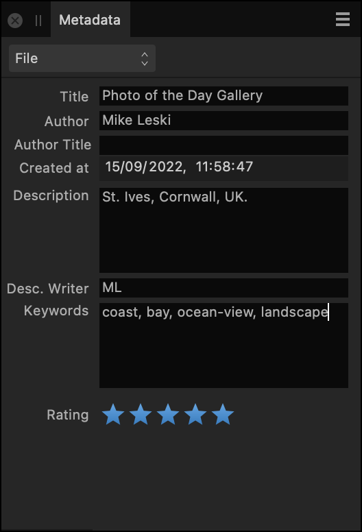
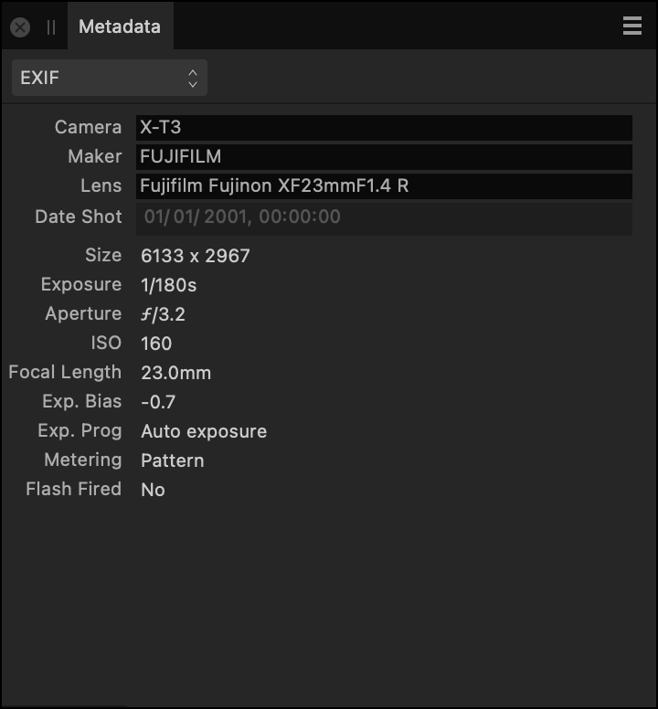
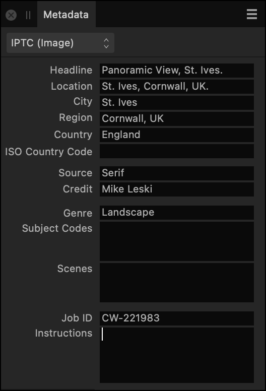
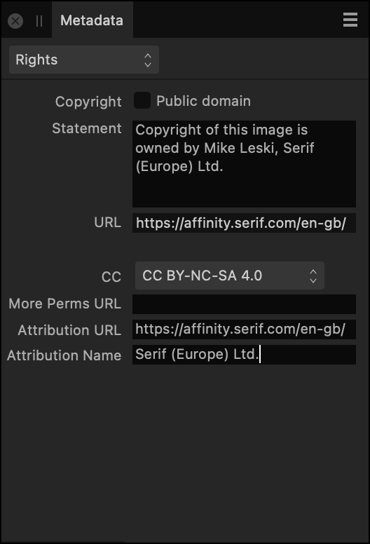

The Metadata panel enables you to inspect and enter information describing the content, copyright and usage rights of an image.
About the Metadata panel
The Metadata panel is available in the Photo, Develop and Export Personas. To make it visible, select Window>Metadata.
You can use the panel to add new metadata to an image, edit existing metadata, and import metadata from/export metadata to an external file.
The contents of the panel's fields are saved as part of Affinity Photo 2 documents and optionally included when exporting to other image file formats.
Additionally, you can use the panel to inspect EXIF metadata that describes the hardware and shooting settings used to take a photo. Some EXIF metadata is editable in Affinity Photo 2, i.e. Camera, Make, Model, Date shot. All EXIF data can be removed in one operation.


The Metadata panel showing the File and EXIF categories, left and right respectively.
Metadata categories
The panel's fields are organized into several categories. Use the pop-up menu (top left) to switch between them. The following categories are available:
File—a summary of the image's contents and creator.
EXIF—a summary of the digital camera hardware and settings used to capture the image, where applicable.
IPTC (Image)—descriptions of the content and the location depicted, the image's source (owner), the credit line to display wherever the image is used, and a job ID to help track the image through a workflow. Often used by news organizations and photo agencies.
IPTC (Contact)—the image creator's contact details, including postal and email addresses, telephone number and website. Often used by news organizations and photo agencies.
Rights—image copyright details, any applicable Creative Commons license, and rights-related website addresses.


The Metadata panel showing the IPTC (Image) and Rights categories, left and right respectively.
For additional guidance about each field's expected contents, refer to the IPTC Photo Metadata User Guide's Field Reference Table. Many fields in the Metadata panel accept freeform text; the guide contains examples of common practice.
Choosing what metadata to record
Setting metadata is optional. The following properties are recommended as the minimum to be populated:
Description in the File category.
Author1 in the File category. (The same as the IPTC attribute Creator.)
Source in the IPTC (Image) category. (The same as the IPTC attribute Copyright Owner.)
Statement1 in the Rights category. (The same as the IPTC attribute Copyright Notice.)
Credit1 in the IPTC (Image) category. (The same as the IPTC attribute Credit line.)
1 Image-based searches conducted using Google can display this metadata. Further details are available online at this IPTC article.
Ask your organization or client whether it has its own guidance on which metadata it requires to be recorded and how the data should be expressed.
Metadata in exported images
To include metadata from all the panel's editable fields in an exported PNG, JPEG, TIFF, PSD or EPS file, click More in the Export Settings dialog and tick Embed metadata.
Most EXIF data will also be included; in particular, some lens information may be omitted.
Exported PDFs include the contents of the Title, Author and Keywords fields, which you can set in the Metadata panel's File category.
To remove camera and GPS location metadata from an Affinity Photo 2 document:
Open the Panel Preferences menu and do one of the following:
Choose Strip GPS Location to remove precise location data.
Choose Strip All EXIF to remove info about camera hardware and shooting settings used in the image's creation.
To export metadata to a sidecar XMP file:
(Optional) Strip GPS location and/or EXIF metadata from your document.
From the Panel Preferences menu, select Export to XMP and then do one of the following:
Choose All to include all metadata in the resulting file.
Choose EXIF to include only metadata in the eponymous category in the resulting file.
Choose File, IPTC and Rights to export all metadata shown in those panel categories.
Set the filename and choose where to save the XMP file.
Click Save.
To import metadata manually from a sidecar XMP file:
From the Panel Preferences menu, select Import from XMP>File, IPTC and Rights.